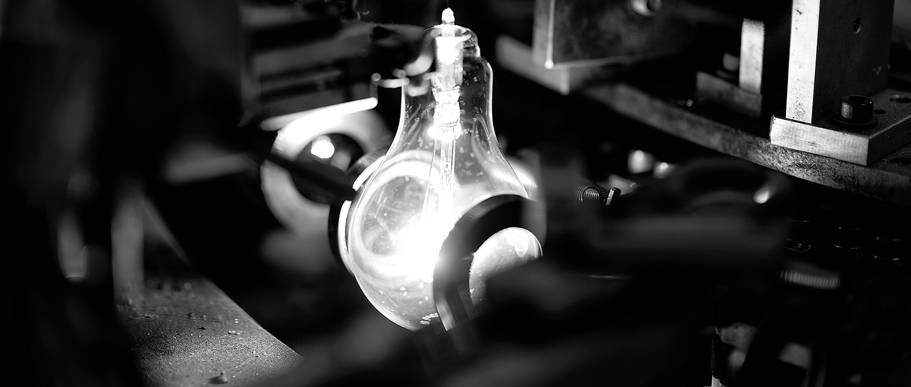

OUR STORY
Lightful Story
인류에게 빛은 늘 필요한 도구였습니다. 촛불 이후 유일한 인공 빛으로서의 호황기, 형광등과 나란히 어깨를 겨루던 1980년대 그리고 LED전구와 디지털의 시대를 지나오는 동안에도 시대는 늘 백열전구를 필요로 했고, 일광전구는 그 시대의 필요 속에서 백열전구의 새 가치를 찾고자 했습니다. 전업사로 시작하였던 일광전구는 1962년 창립 이래 조명용 백열 전구를 생산해왔습니다. 저렴한 가격에 손쉽게 구입할 수 있었던 백열전구는 가장 가까이에서 우리의 일상을 밝혀주었습니다.
Our Factory & People
탄소가 타며 만들어내는 에너지로 빛을 밝히는 백열전구는 자연의 원리 그대로를 우리의 일상 공간에 가져온 유일한 전구입니다. 얇은 탄소섬유 필라멘트와 유리구, 펜던트에 이르기까지 전구를 만드는 과정에서 전통의 방식을 고수하는 점은 전구가 가진 본질을 지켜나가겠다는 장인의 마음입니다. 부친의 회사를 물려 받던 1998년, 김홍도 대표가 주목한 것은 백열전구가 가지고 있는 아날로그적 매력이었습니다. 자연을 닮은 백열전구는 우리의 일상을 따뜻하게 채워주는 힘을 갖고 있습니다. 이는 효율성이 강조되는 첨단 조명과는 뚜렷하게 구별되는 매력이며 디지털 시대가 필요로 하는 아날로그 빛의 가치입니다.
백열전구에 대한 신념을 바탕으로 오래된 빛에 디자인을 더해 새로운 제품으로 만들어나가는 도전을 계속합니다. 또한 반세기 동안 백열전구를 비롯한 다양한 전구들을 다루며 각자의 빛에는 알맞은 쓰임이 있다는 사실을 알게 되었습니다. 장인기업으로서 빛에 대한 노하우를 갖고 있는 일광전구는 아름다운 빛을 올바르게 사용하며 가치있는 자신의 삶을 가꾸어가는 지혜를 전하는 길잡이가 되고자 합니다.
Delight of Your Life
자동차의 발명으로 우리는 일상의 생활공간과 조금은 떨어진 곳에서도 여가시간을 누릴 수 있게 되었습니다. 접착식 메모지는 창의적 아이디어를 공유하고 타인과 협업하며 생산적인 창의활동을 가능하게 해주었습니다. 이처럼 우리 곁을 오래도록 지켜주고 있는 사물들은 그것이 갖고 있는 표면적인 기능이나 특징 이상의 가치를 우리의 삶에 불어 넣어준다는 공통된 특징이 있습니다.
인류가 발견한 두 번째 불, 인류의 삶을 변화시킨 백열 전구의 또 다른 이름입니다. 지혜와 학문을 꽃 피우고, 어두운 밤 속에서 내일의 희망을 그려내는 힘. 영롱한 빛 아래에서 내면의 세계를 열어가고 따뜻한 빛을 통해 사람과 사람을 친밀하게 만들어주는 일상. 더 나아가 수 많은 하루하루를 기쁨의 축제와 같이 만들어가는 변화. 이것들이 바로 일광전구가 빛을 통해 만들어가는 삶의 가치입니다.
Stories of Our Products
We make Light., 2017
창립 50주년을 맞이했던 지난 2013년 일광전구는 'We Make Light'라는 슬로건을 내걸고 또 다른 50년을 위한 재도약을 시작하였습니다. 야외파티용 전구나 클래식 전구의 출시는 지금의 시대가 새로이 필요로 하는 빛을 전하기 위한 일광전구의 노력입니다. 백열전구, LED전구, EEFL 등 일광전구가 가진 매력들을 다양한 공간에서 보여드리기 위해 동시대 젊은 창작 그룹과 함께 협업하고 있습니다. 아티스트들과 함께 하는 Ik Art Project는 일광의 새로운 빛을 찾아가기 위한 활동입니다. 일광전구가 만드는 것은 하나의 제품이자 공간과 시대를 밝히는 빛이 될 것입니다.
We make light.
People who make ilkwang lightings
- Bae Yun Ju
- Hong Gi Don
- Hong Gi Wan
- Hong Soo Young
- Jeong Myeong Hun
- Kang Gi Hwa
- Kang Gyeong Sun
- Kim Ho Jin
- Kim Hong Do
- Kim Yeong Ha
- Kwon Sun Man
- Lee Jeong Hui
- Lee Kang Rok
- Lee Yeon Hui
History
- 1962.09
- 일광전구공업사 창립, 대구시 서구
- 1973.08
- 대구광역시 제3공단 신축이전 대구시 북구
- 1977.07
- 백열전구 KS인증 획득
- 1984.03
- 대구광역시 제3공단 확장이전
- 1986.04
- 주식회사일광 법인전환
- 1989.08
- 한국 표준 연구소 지정 유망 중소기업 선정
- 1994.07
- 대표이사 변경 김만규 - 김홍도
- 1999.04
- 크립톤전구 생산
- 1999.11
- IOS-9002 인증 획득
- 2000.03
- 중소기업 기술혁신과제 개발사업 업체 선정
- 2001.03
- 중소기업 기술혁신과제 개발사업 완료
- 2002.02
- 대구 성서공단 3차 단지 신축이전
- 2002.06
- 중소기업청 모범중소기업상 수상
- 2004.05
- 한국표준과학연수원 표준전구 납품업체 선정
- 2005.03
- 국내최초 소형 백열전구 KS인증 취득
- 2007.05
- ISO-9001 인증
- 2007.06
- 연구개발 전담부서 설립
- 2007.07
- INNO-BIZ 인증
- 2007.09
- 중소기업 사업전환기술개발사업 수행
- 2008.01
- EEFL 양산설비 구축 및 양산화
- 2012.01
- 가정용 사무용 상업용 LED램프 사업 진출
- 2012.06
- 클래식 시리즈 출시
- 2013.01
- 일광전구 브랜드 리뉴얼
- 2014.10
- <2014 Good Design Award> 수상
- 2014.11
- 도쿄 미드타운 <Good Design Award> 전시
- 2014.11
- 파티용 조명기구 P1 출시
- 2014.12
- 과자전 <2014 코리아 크리스마스 페어> 참여
- 2015.05
- 럭셔리 매거진 <Portrait of Master>
- 2015.12
- <29cm> 2015 프레젠테이션 셀렉
- 2015.12
- 아트 프로젝트 아티스트 김태경
- 2016.03
- IK ARCHI 시리즈 출시
- 2016.03
- <2016 서울리빙디자인페어> 참여
- 2016.05
- 현대백화점 판교 팝업스토어
- 2016.06
- <29cm> 2016 프레젠테이션 셀렉
- 2016.09
- 건축 프로젝트 <토리코티지X일광전구> 제주
- 2016.09
- 대구 본사 사무동 리모델링
- 2016.12
- 파티용 조명기구 P2 출시
- 2016.12
- 동대문 DDP 전시 <We make light.>
- 2016.12
- 대림미술관 행사 참가 <Winter Jazz Land>
- 2017.03
- <2017 서울리빙디자인페어> 참가
- 2017.03
- 미니크립톤 생산라인 신설
- 2017.04
- 공식 홈페이지 리뉴얼 오픈